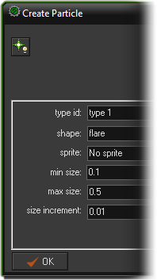
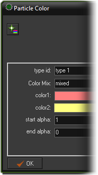
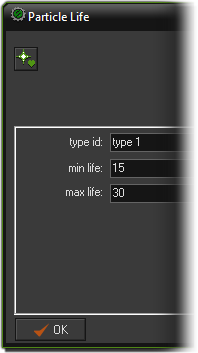
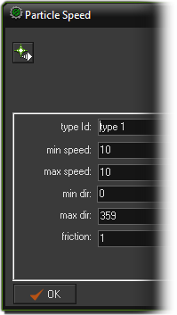
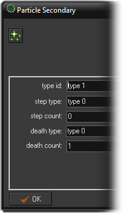

Tutorial
Page 5 of 12
Creating Particles With D'n'D (II)
With the smoke done, we need to create the catherine wheel effect particle too, so you should create a new particle type (type 1 this time) and set it up as shown in the following images:



Since the above actions have been covered on the previous page we won't go into detail here about them, but for this particle we need to define it's movement to be a bit more interesting than a simple
uni-directional gravity pull, and for that we need the Particle Speed action. Drag it into the action list and set it as follows:

As you can see, we are again presented with a minimum and maximum value for speed and direction, which we can use to set how the particles move over their lifetime. In this case, since we want a wheel
effect, we want all the particles to have the same speed and, to create a circle, we give them a random direction from 0º to 359º. With enough particles created this will give a nice circular effect! Notice that
friction is added, with a value of 1 (speed will reduce at a rate of 1 pixel per step), and in this way we will limit the distance that the particles travel as when they have 0 speed they will stop moving (friction
will never reduce the speed to less than 0).
The last thing to do for this particle is use a rather fun and interesting action called particle Secondary. this will create a specified number of a secondary particle (previously defined) either during
every step that the particle exists, or when the particle reaches the end of it's lifetime. Drag the icon into the action list and fill in the details as shown below:

What we are doing here is telling GameMaker:Studio studio to spawn 1 particle of type 0 at the end of the lifetime of particle type 1. In this way, our firework will create it's own smoke when it's finished
sparking and flashing, just like in real life!
NOTE : The secondary particle action can quickly create many thousands of particles or even an infinite loop of particle creation which can slow down and crash your game, so take great care with this
one!
Save your game and then go to the next section of the tutorial where we will finish this object and finally get to see how it looks.
Click on the Next button to go to the next page of the tutorial.